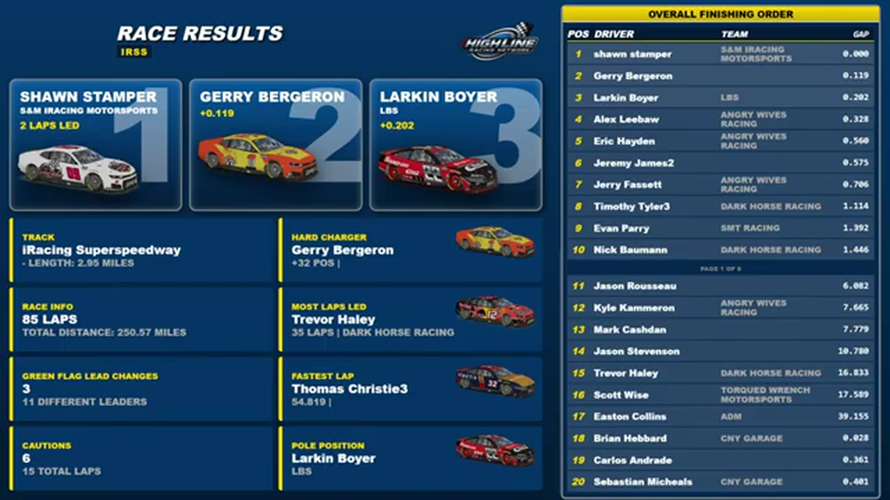

Joshua McKenna
Team assignment not stated in the structured owner record.
AN OFFICIAL-TAPE FOOTPRINT, NOT A RESULTS CLAIM
- Official files
- 8
- Central editions
- 0
- Exact tape cues
- 6
- Accepted podiums
- 0
Joshua McKenna appears in 8 official HLRN broadcast files across Seasons 1, 2. The current result ledger does not assign this driver a supported top-three finish. A consistently stated team affiliation remains open for owner review. The currently indexed source window runs from January 12, 2026 through July 20, 2026.
The primary chapter index supplies 6 direct jump points. Talladega is the most frequent named track in the current appearance ledger. The densest direct-tape categories are incident (2 cues) and restart (2 cues). Those counts describe where the name is easiest to find; they are not fault, pace, or performance grades. A source-attributed car frame is published with its original video and timestamp. That is the current discovery map for Joshua McKenna.
Official name signals are used for discovery only. They do not become starts, points, incident counts, or an ability grade. This page is deliberately detailed about the tape and restrained about the unavailable competition record. Separately, 10 Highline Live files sit on the bonus shelf and never enter the official season ledger. The displayed name is labeled transcript normalized; that status remains visible so an owner roster can strengthen or correct the identity without rewriting the evidence trail. Those boundaries define Joshua McKenna's public HLRN file.
6 featured race-tape cues
These are discovery routes into complete HLRN broadcasts, not performance grades or inferred results.
- S2 / R2 · BATTLE
Trace McDowell and Joshua McKenna carry the Iowa lead battle
S2 / R2 at 2:37:42: The Iowa pack compresses in a front-pack fight while Trace McDowell, Joshua McKenna, and Jared Philpot are named on the call. The chapter keeps the live battle intact and makes no finishing-order claim.
Iowa - S2 / R2 · RESTART
Iowa rebuilds its top five after a blinking caution
A blinking car disrupts the timing display as another caution appears. HLRN reads Trace McDowell, Jared Philpot, Joshua McKenna, Cory Cook, and Brian Hennings at the front; those names are the restart order, not an incident list.
Iowa - S1 / R9 · RESTART
Chicagoland's scheduled caution freezes Trevor Haley in front
The scheduled caution appears in turn four as the booth expected. HLRN reads Trevor Haley ahead of Juan Escamilla, Joe Quan under the Stewart scoring name, and Joshua McKenna; those leaders are the running order, not participants in a caution replay.
Chicagoland - S2 / R1 · STRATEGY
Fuel-only stops split Daytona's caution cycle
Joshua McKenna, Shane Hatfield, Brandon Showers, and Randy Showers are among the drivers taking fuel only. HLRN follows the short-stop choice as the running order reorganizes under caution.
Daytona - S2 / R4 · INCIDENT
Brian Hayes gets loose and collects Joshua McKenna at EchoPark
HLRN follows Brian Hayes losing the car and making contact with Joshua McKenna before a teammate arrives with a heavy secondary hit. The desk replays the angle while leaving the formal fault cell open.
EchoPark Speedway - S2 / R3 · INCIDENT
Joshua McKenna is caught in the Chicagoland caution replay
S2 / R3 at 2:01:34: The caution sequence centers the replay call on Joshua McKenna. This is a source-bounded incident window; it preserves what the booth reviews without assigning unsupported fault.
Chicagoland
Verified team history is not consistently stated. No position-specific top-three result is currently accepted. Name normalization remains reviewable against owner records.